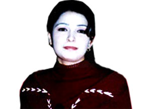
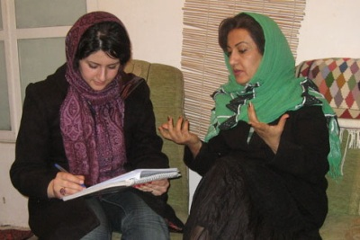
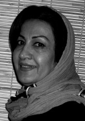
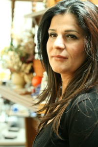
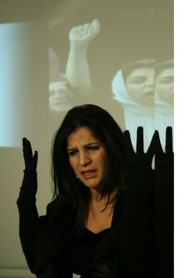
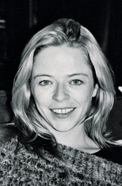

پذيرش > تریبون > گفت و گو > گفتگو با شاعر، ترانه سرا، و کارگردان کلیپ امنستی درحمایت از کمپین برای (...)
 در سالگرد مرگ دعا دختری که قربانی خشونت ناموسی شد : کجاست سرزمین من ؟ در سالگرد مرگ دعا دختری که قربانی خشونت ناموسی شد : کجاست سرزمین من ؟

 گفتگو با شاعر، ترانه سرا، و کارگردان کلیپ امنستی درحمایت از کمپین برای برابری گفتگو با شاعر، ترانه سرا، و کارگردان کلیپ امنستی درحمایت از کمپین برای برابری
23 فروردین 1388 - ژینا مدرس گرجی / تارا نجد احمدی - نسخه قابل چاپ
پلاکادرهای کمپین با نوشته های برابری به رنگهای آبی ، قرمز، سبز و زرد در حرکتند و جاری می شوند در دست های آنها در دستهای همه ی ما ، در هرکجا که هستیم..در دستهای همه ی ما که دستانمان را برای "برابری" در دست هم می دهیم و جاری می شویم در هر زمان در هرکجا..
دیدن و بدون شک تحت تاثیر قرار گرفتن کلیپ "کجاست سرزمین من؟!" با صدای آشنا ی ژاله با تصویرهایی از اجرای شعارهای کمپین توسط شاخه ی دانشجویان حقوق سازمان عفو بین الملل برای کنفرانس دفاع از حقوق زنان در لندن سال2008 بهانه ای شد برای مصاحبه با خواننده و ترانه سرا وکارگردان این پرفورمنس زیبا و کلیپ آن.
گفتگو با سیمین چایچی و ژاله رحیمی را ژینا مدرس گرجی از فعالان کمپین در کردستان و عضو کمیته علیه خشونت های ناموسی و گفتگو با ورایتی کویل را تارا نجد احمدی از اعضای کمپین تهران و فعال در عرصه هنری انجام داده اند. این گفتگوها پس از پخش کلیپ زیبای امنستی انجام شد اما انتشار آن به سالروز مرگ دعا دختر کرد عراقی موکول کردیم با یادی از او و دیگر قربانیان خشونت های ناموسی.
کدام سرزمین هست که عاشق ها
به جرم بزرگ ایستادگی
محکومند به چار دیواری
زنده به گوری وخودسوزی
آنجا سرزمین من است
سزای ایستادگی مردن است
و زیبایی ها در زیر پا

آری، این جوریه ، آری این جوریه
کدام سرزمین است
که تیر طعنه اصابت می کند به شاهبال عقاب
آسمان پرواز را می فروشند
هریک وجب وجب هزارهزار
آنجا سرزمین من است
سزای پریدن مردن است
پرنده در کنج قفس
آری این جوریه ، آری این جوریه
خواننده : ژاله / شعر: سیمین چایچی / موسیقی : روزبه مصلح

به سراغ سیمین چایچی می روم که دوستانه و صمیمانه مرا پذیرا می شود و یاری می کند. سیمین چایچی ترانه سرا ، فعال زنان ،نمایش نویس کودکان و مسئول کمیته ی زنان نویسنده ی کرد در انجمن جهانی قلم است.او تا به حال چندین نمایش نامه ی کودکان به زبان کردی از جمله: شهر آشتی ، جوجه طلایی ، کفش دوزک و شاه موشها که در سنندج ،اربیل و لندن اجرا شده اند نوشته.مجموعه شعر ترانه های او با عنوان "قمار" به زبان کردی در سال 2008 در کردستان عراق به چاپ رسید که می توان آنها را عاشقانه های اعتراضی زنانه خواند. ترانه های آلبوم کجاست سرزمین من با صدای ژاله رحیمی و موسیقی و تنظیم روزبه مصلح از همین مجموعه است.ژاله رحیمی متولد سنندج است که تضاد زن بودن او با عشق،علاقه و پیگیری به موسیقی و خوانندگی او را در اوائل دهه 90 میلادی به انگلستان تبعید می کند، ژاله را از قبل هم می شناختم آلبومهایش را دیده و شنیده بودم .ویژگی همیشه بارز او ظاهر اوست: آنچه هست و دوست دارد باشد، است و نظرها و معیارهای مردسالارانه ی دیگران برایش مهم نیست و در آثارش آنها را به نقد هم می کشد. اولین آلبوم حرفه ای او "دوستت دارم" در سال 1999 دومین آلبوم او با عنوان "آینده چگونه خواهد بود" در سال 2003 و جدیدترین اثر او" کجاست سرزمین من" در سال 2008 ضبط و پخش شده است.
این گفتگو همزمان انجام نشده است. مصاحبه نخست با با خانم چایچی است که حضوری در سنندج انجام شد و دیگری غیر حضوری و از طریق ایمل هست که با خانم ژاله رحیمی در لندن، انجام شد.
ژینا مدرس گرجی

سیمین چایچی: این ترانه همه را متاثر می کند این یعنی دردهایمان مشترک است
*خانم چایچی لطفا برایمان بگویید که ترانه سرایی را از کی و چه طور آغاز کردید؟
سیمین چایچی - تا آنجایی که به یاد دارم بازی های کودکانه ام از پنج شش سالگی به صورت نمایش های ریتمیک آغاز شد. یعنی دیالوگها به صورت ریتمیک و قافیه ها از نظر آوایی شبیه و نزدیک به ترانه شعر بودند. تا اینکه در سال 51 یعنی در سن 20 سالگی شعری کردی سرودم که یکی از خواننده های همشهریمان خواند و ترانه شد. وقتی شعرم را به صورت ترانه در زمزمه های مردم که تکرار می کردند و می خواندند ، شنیدم احساس عجیبی به من دست می داد و خوشحال بودم که حرفهایم در میان زندگی مردم جاریست. بعدها از سال 70 که نوشتن به زبان کردی آزاد شد من هم ترانه شعرهایم را به زبان کردی نوشتم .چون بر این باور بودم و هستم که ترانه باید به زبان مردم همان جغرافیا باشد تا تاثیر بیشتری داشته باشد. سوای این نکته مورد دیگری بود که برایم مهم بود. می دانستم که ترانه سرای غیر کرد که به فارسی می نویسند اشخاص زیادی هستند ،اما ترانه سرایی و شعر کردی نیز به زنانی در این عرصه نیاز دارد. به خصوص اینکه قبل ها ترانه سرایی در کردستان به خصوص برای زنان به شکل حرفه ای رسم نبوده .ولی من سعی کردم و توانستم برای بار اول حرفه ای و جدی ترانه سرایی را کار کنم .حتی در سفرهایی که به کردستان عراق داشتم پیشنهاد دادم که کانونی تحت عنوان ترانه سرایان کرد تشکیل دهیم.
*فکر اولیه ی ترانه ی" کجاست سرزمین من" چگونه شکل گرفت؟از این ترانه برایمان بگویید.
سیمین چایچی - در سفری که خانم ژاله رحیمی به ایران آمدند و همدیگر را ملاقات کردیم ، تصمیم به همکاری برای آلبومی جدید گرفتیم .پسرم روزبه از قبل ملودی های بسیاری داشت و خانم رحیمی ملودی ها را بسیار پسندید. انگارخشونت علیه زنان و قتل های ناموسی در کردستان روز به روز افزایش می یابد و مرتبا خبرهای ناگواری را می شنویم . با پیشینه ی فکریمان هردو این تصمیم را گرفتیم که در این آلبوم یک اثر را اختصاصا به مسئله ی خشونت علیه زنان کار کنیم. در همان فاصله ی زمانی که قتل و سنگسار وحشیانه ی دختری عاشق به نام " دعا " در کردستان عراق اتفاق افتاد سخت مرا تحت تاثیر قرار داد وقتی فکر می کردم که سنت چقدر عمیق در میان جامعه ریشه دوانیده و حذف و مبارزه با این سنت های وحشیانه چقدر دشوار است و راه طولانیست و عزمی جزم می خواهد این ترانه را سرودم.
* بازتاب ترانه را چه طور دیدید؟ واکنش ها چگونه بود؟
سیمین چایچی - همه ی کسانی که ترانه را خوانده بودند و بعد آواز را شنیدند به خصوص زنان به من می گفتند که خیلی تحت تاثیر قرار گرفته اند و موی تنشان راست شده است. وقتی برای اولین بار متن ترانه را در تلفن برای دوست عزیزم خانم پروین ذبیحی در مریوان خواندم و منتظر شنیدن نظرش بودم هیچ حرفی نزد، فقط صدای گریه اش را در گوشی شنیدم.طبعا هر کسی این ترانه را بخواند یا آواز را بشنود به خصوص از آنجا که تداعی کننده ی موضوع دعا و خشونت علیه زنان است تحت تاثیر قرار می گیرد و به فکر فرو می رود.
*خانم چایچی در گفتگوهایمان اشاره کردید که آهنگ سازی این آلبوم اثر پسرتان آقای روزبه مصلح است با توجه به این که در این آلبوم به خصوص ترانه ای که مد نظر ماست موسیقی و تنظیمی عالی داشت و واقعا در موثر بودن کار تاثیر داشت. لطفا در این مورد نیز توضیحی بدهید.
سیمین چایچی - این آلبوم اولین اثر روزبه به شکل حرفه ای بود. روزبه دانشجوی رشته ی موسیقی در تهران است و در این زمینه واقعا فعال و موفق پیش می رود. هنگامی که متخصصین اهل این فن به آهنگ سازی و تنظیم این آلبوم گوش دادند تعجب می کردند که پسری جوان و دانشجو این چنین از بار تکنیکی و تنظیم قوی باشد و او را تحسین می کردند.
* از نظر شما ترانه چگونه می تواند بر روند های اجتماعی تاثیر گذار باشند؟
سیمین چایچی -ترانه مانند شاخه ای از هنر وارد جامعه می شود و موثر است.من شخصا برای بیان افکار و احساساتم ترانه سرایی را انتخاب کرده ام. برای مثال برای فاجعه ای مانند مسئله ی دعا و خشونت علیه زنان ممکن است افرادی مقاله یا کتاب بنویسند، افرادی عکس یا نقاشی کار کنند ،عده ای کارگاه های آموزشی مقابله با خشونت زنان برگزار کنند و غیره ،که هرکدام از این فعالیت ها ویژگی ها و خصوصیت خاص خود را دارند و هرکدام به نوعی لازمند . من نیز به این روش فعالیت و کار می کنم چون به نظرم همه گیرتر است .کتاب را فقط کتابخوانها می خوانند ، یا موردهای دیگر فقط شامل قشر خاصی می شود. اما ترانه و آواز همان طور که گفتم همه گیر است.این ترانه اکنون به یک سرود سمبلیک و نمادین تبدیل شده که هر کسی آن را می شنود تحت تاثیر قرار می گیرد این یعنی دردهایمان مشترک است.
*خانم چایچی ارتباط بین جنسیت و ترانه سرایی را چگونه می بینید؟
سیمین چایچی -مسلما وقتی شاعری زن در مشرق زمین زندگی می کند جدا از مسائل تاریخی که بر سر همه ی زنان حاکم بوده است درگیر مشکلات و مسئله های خاص دیگری نیز می شود. قطعا من هم به عنوان یک زن ترانه سرا در این موقعیت جغرافیایی که هستم در بازتاب این مسائل مربوط به خاص زنان قرار می گیرم و هنگامی که خودم را، همنوعان و همجنسانم را درگیر بسیاری مسائل میبینم و لمسشان می کنم بر ترانه هایم تاثیر می گذارد.سوای این مسئله در ترانه سرایی فولکلور در گذشته اکثرا مردان احساس عشق و دوست داشتنشان را به عریان ترین زبان بیان کرده اند اما تعداد زنان ترانه شعر سرایی که بی پروا احساستشان را بگویند کمتر بوده است.من این سنتها را شکستم. به نظر من زنان ترانه سرا هم باید این جسارت را داشته باشند و این حق را به خودشان بدهند ، که بتوانند از عشقشان به مردی که دوستش دارند و از لحظه های شخصیشان و احساسهایشان با دید و زبان زنانه ی خود بگویند.
*به عنوان یک زن ترانه سرا آیا موانع و مشکلاتی بر سر راهتان داشته اید؟
سیمین چایچی -همیشه یکی از خصوصیات من این بوده که نتوانسته ام در یک قالب خاص خودم را محدود کنم و چهارچوبها را بپذیرم. خب طبیعتا در روند و روال این جامعه این خصوصیت مشکلاتی را برایم درست کرده که من در مقابلشان ایستادگی کرده ام.اما تنها موردی که من را در یک قالب و چهارچوب برد و محدود کرد مسئله ی مادری بود.متاسفانه الگوهای رایج برای زن ها در جامعه ی ما اکثرا مادر خوب برای فرزندان و همسر خوب برای شوهر، زنی صبور، فداکار و از جان گذشته برای همسر و فرزندان است. به نظرم لزوما قرار نیست کسی فدا شود. می توان مادر و همسر خوبی بود به این شدت هم فداکار نبود! من با این وجود که عاشق فرزندانم هستم اما همواره سعی کرده ام این احساس را در حد تعادل نگه دارم. چون نمی خواهم این احساسات مانع پیشرفت در کار و هنرم باشد.
*و اما سخن آخر؛
سیمین چایچی -امیدوارم بتوانم حرفه ای تر کار ترانه سرایی را انجام بدهم چون به نظرم ژانری از ادبیات است و این روش نیز گونه ای از فریاد و نوعی مبارزه ی برابری طلبانه است.

ژاله رحیمی: این ترانه توصیف بسیار قوی از وضعیت زنان در جامعه ماست
*خانم رحیمی در گفتگویم با خانم چایچی ایشان این نکته را ذکر کرده بودند که این ترانه با سنگسار و قتل بی رحمانه ی "دعا" ارتباط دارد. با وجود اینکه از جریان دعا ابراهیم 2 سال می گذرد یادتان مانده وقتی که شما خبر را شنیدید چه احساسی داشتید و چه تصمیمی گرفتید؟ چه تاثیر درآثارتان داشت؟
ژاله رحیمی - من همواره در انتخاب شعر ، آواز وموزیك از حساسیت خاصی برخوردار بوده ام و كیفیت كار و پیام آن برایم اهمیت بیشتری داشته است. چون من به عنوان یك هنرمند آن هم یك هنرمند زن كه از بطن جامعه ای بیرون آمده كه همواره زنان مورد تعرض و تعدی قرار گرفته اند، بار مسئولیت سنگینی را بر دوش خود احساس كرده ام و در حد توان خود سعی نموده ام آن را به جا بیاورم. از اینرو برای آلبوم سوم خود تصمیم گرفته بودم كه یك ترانه برای وضعیت زنان بخوانم و البته مرگ دعا با آن شیوه فجیع و غیر انسانی در مقابل چشمان صدها نفر از جمله اعضای خانواده اش مرا بر آن داشت که یک آهنگ به یاد او باشد.
من طی سالهای گذشته از طریق رسانه های تلوزیونی كردی مصاحبه های فراوانی داشتم كه همواره بر موضع دفاع قاطع از زنان پافشاری نموده ام و دراین راستا مقالات و نوشته های زیادی نیز نوشته ام، در مراسمهای زیادی از جمله 8 مارس شركت نموده ام و جالب اینجاست كه بعنوان خواننده اولین اجرائی كه داشته ام در مراسم 8 مارس روزجهانی زنان در لندن بوده است.
من همواره تلاش كرده ام كه نشان دهم كه زنان ما توانا بوده و باید بااتكا و اعتماد به نفس خود، نقش و جایگاه ویژه و ارزشمند خود را در جامعه نشان دهند. همچنین سعی نموده ام كه از سواستفاده تبلیغاتی كه از زنان می شود واز آنان بعنوان كالا مورد استفاده قرار میگیرد كه این با تفكر من بسیار فاصله دارد دوری كنم. واگر زنان و دختران ما به من نگاه میكنند به عنوان الگوئی مناسب و قابل قبول برای آنان باشم.
مرگ دعا بشكل غیر انسانی و وحشیانه آن شاید موضوع تازه و غیر مترقبه ای نبود آنچه بر زنان ما می گذرد چه قبل و چه بعد از مرگ دعا در بطن خود از یك سرشت برخوردار است، جامعه ای مرد سالار كه در آن زنان به عنوان یك وسیله و شئی، بود و نبودشان توسط صاحبان انان رقم زده می شود هرگاه و به هرشكلی كه بخواهند انان را نابود و كسی جلودار آنان نیست و حتی قوانین حاكم برجامعه نوعی مسئونیت برای این قاتلان به بار اورده ومی اورد.
اما انچه كه مرگ اورا برجسته نمود و همگیمان را متاثر نمود شیوه قتل او بود، در یك نمایش عمومی، به شكلی فوق غیرانسانی ودر برابر چشمان قانون و بی توجهی به آن تا مدتها بعد ازآن. تمامی این فجایع به شكلی به تصویر درآمد كه صدها هزار نفر آن را مشاهده كرد. كاملا به یاد دارم سعی من این بود كه ترانه خود را هرچه سریعتر پخش نمایم اما عواملی بسیار مانع آن می شد به همین خاطر در رسانه های كردی سعی كردم احساسات خود را در قالب متنی كوچك بروزدهم و به یاد این قربانی عشق پاك ونفرت بر سیستم مردسالار،این ترانه را به یاد او ارائه كردم.
* با خانم چایچی چه طور آشنا شدید؟ و این همکاری چه طور شکل گرفت؟
ژاله رحیمی- البته من از طریق اشعار خانم چایچی ایشان را میشناختم اما رودررو در سفری كه به كردستان داشتم ایشان را از نزدیك مالاقات نمودم و این دیدار به یك دوستی عمیق و همكاری نزدیك منجر شد. من و سیمین اکنون دوستان بسیار خوب و صمیمی برای هم هستیم.
*آیا از این که این ترانه روی برنامه ی سازمان عفو بین الملل به صورت کلیپ کار شده بود خبر داشتید؟ لطفا در این مورد برایمان بگویید؟

ژاله رحیمی- بله یكی از دوستانم كه ازاعضای سازمان عفو بین الملل است در مورد كنفرانس 52 دانشگاه از جمله اكسفورد و كمبریج در دفاع از حقوق زنان مرا در جریان گذاشتند و گفتند كه از من خواسته شده كه ترانه ام را در آنجا اجرا كنم پس از اجرای ترانه به دلیل توصیف بسیار قوی این ترانه از وضعیت زنان در جامعه ما، از من خواسته شد كه ترانه ام را در فیلمی كه آنان به همین هدف ساخته بودند استفاده كنند و من با كمال میل قبول كردم.
* با توجه به موضوع و محتوای این اثر آیا با مشکلات و یا موانعی برخورد کردید؟ چون صحبتهایی در مورد موانعی برای پخش این آلبوم در کردستان عراق شنیده بودم.
ژاله رحیمی- متاسفانه هرچند واقعا كیفیت موسیقی این اثربالا بود، شعر بسیار قوی و اجرای آن نیز حرفه ای بود، اما از طرف حكومت حریم كردستان مورد استقبال زیادی قرار نگرفت .علت آن را باید در تاثیر این ترانه و تیزی آن جست كه برای آنانی كه زیاد نمی خواهند وضعیت موجود را تغییر دهند، البته كه قابل فهم است. اما برای من كه به كار خود اعتماد دارم ومطمئنم این اثر در عمق جامعه و در بین زنان تاثیر خود را داشته و خواهد داشت اصلا برایم ناامید كننده نبود اما احتیاج به زمان داشت. وجود امكانات پخش برای من به عنوان یك فرد محدود است. رساندن پیام آن در جامعه نمی توانست سریع باشد. وجود افكار مستقل و ارائه كارهایی از این گونه البته مرا از امكانات زیادی كه در صورت سر به زیر بودن قادر به دریافت ان بودم محروم كرده است، اما من خوشحالم كه اگر امكاناتی ندارم اما قادر هستم آنچه را اعتقادم است بیان كنم.
*خانم رحیمی تاثیر این آواز را چه گونه دیدید؟ بازتاب و واکنش هایی که می دیدید یا می شنیدید چه طور بود؟
ژاله رحیمی- اگر زاویه برخورد به این ترانه توده زنان جامعه مان باشد تا كنون در هیچ مراسمی و در برخورد با هیچ زنی مطلب و موضوعی علیه آن نشنیده ام. همگی در تائید آن صحبت كرده اند. تاكنون در چندین برنامه و كنفرانس زنان نیز اجرا شده است. اما با توجه به تندی شعر و محتوای این ترانه از طرف حكومت حریم كردستان استقبال گرمی از آن نشده است. تاخیر زیاد در پخش آن، عدم تبلیغ و بی توجهی قابل محسوس، برخوردی بود كه من از آنان مشاهده نمودم والبته این به من قوت قلب داد كه پیام آواز من چقدر گیرا و قوی بوده است و اگر این موانع رسیدن امواج آن را به تاخیر می اندازد اما دامنه ی آن را محدود نمی سازد و بی شك در ادامه خود عمیقتر و كاری تر به دلها خواهد نشست.
* از منظر شما ترانه و آواز چه طور بر روند اجتماعی می تواند تاثیر می گزارد؟
ژاله رحیمی- از دیرباز هنرمندان واقعی و دلسوز با ارائه كارهای زیبا و برآمده از بطن جامعه سعی نموده اند درد و غم جامعه را با هنر خود در دل هزاران انسان جای دهند .هرچه رابطه این دو واقعی تر باشد یعنی هنر بیان واقعی دردهای جامعه باشد و در مقطع خاص خود ارائه گردد بیشتر به دلها نشسته و دامنه آن وسیع تر خواهد شد. در دنیای امروز هنر موزیك یكی از ابزارهای قدرتمند بیان این دردهاست.
*این سوال را از خانم چایچی نیزبرای ترانه شعرهایشان پرسیدم. خوشحال می شوم شما هم با توجه به تخصص خاص خودتان به این سوال پاسخ دهید . ارتباط و تاثیر جنسیت بر کارتان را چگونه دیده اید؟
ژاله رحیمی- البته كه جنسیت من خیلی تاثیر داشته است، اشعار این آلبوم من همگی توسط خانم چایچی ساخته شده است، انتخاب ترانه ای برای زنان اگر بخواهد از روح واقعی برخوردار باشد باید توسط یك زن سروده شود كه از نزدیك نمای این مصائب را لمس میكند و باید توسط یك زن خوانده شود تا بتواند نمای احساس آن را بیان كند. من زمانی كه این ترانه را می خوانم با تمام وجودم در آن غرق می شوم وبا احساسی عمیق آن را بیان میكنم كه مسلما هیچ مردی قادر به آن نخواهد بود.
* خانم رحیمی با توجه به این که اکثر خوانندگان این مصاحبه اشخاصی غیر کرد هستند و شما به صورت حرفه ای آواز خوان هستید، همچنین مطالعاتی در زمینه ی موسیقی و ترانه های کردی داشته اید، بسیار به جاست و که در مورد جایگاه و چگونگی حضور زنان آوازخوان در فولکلور کردی برایمان توضیح دهید.
ژاله رحیمی- كردستان در عرصه موسیقی بسیار ثروتمند بوده و هست یكی از این شاخصها فولكلور است. حضور زنان در این عرصه بسیار برجسته بوده و هست. در دستگاههای موسیقی كردی ما می توانیم به ’’حێران’’، ’’سیاچمانه’’، ’’هوره’’، ’’لاوك’’ و ’’به سته’’ و غیره اشاره كنیم و از دیرباز تا كنون خواندن ’’لاۆك’’ مختص زنان بوده است. و هم اكنون كم نیستند خوانندگان زن حرفه ایی كه در این زمینه نقش بسیار فعالی ایفا میكنند واز جایگاه خاصی برخوردارند.
البته این بدان معنا نبوده كه زنان در دستگاههای دیگر حق خواندن نداشتند. در عین حال لازم به ذكر است كه در موسیقی فولكلور كردی هرچند به نسبت ترانه های مردان کمتر است اما میتوان به ترانه های اشاره كرد كه مختص به زنان بوده است. كه آزادانه و عاشقانه توانستند احساس خود را نسبت به مرد دلخواه شان ابراز دارند از جمله این ترانه ها میتوان به ’’زه نبیل فرۆش’’ كه خانم یا خاتونیست ثروتمند كه عاشق مرد زنبیل فروش میشود، ویا ’’لانك لانك لانكوڵێ’’ زنی بچه دار است كه تلاش دارد بچه اش را در گهواره خواب كند چرا كه شبهنگام با معشوقش قرار دارد و ترانه های بسیار دیگری كه حكایت ترانه از زبان زنان است نسبت به مردان.
* با کمپین یک میلیون امضا برای تغییر قوانین تبعیض آمیزعلیه زنان در ایران تا چه حدی آشنا هستید وچه طور آشنا شدید؟
ژاله رحیمی- من از آنجائی كه همواره مسئله زنان و فشارهای وارده بر آنان برایم از اهمیت خاصی برخوردار بوده است هیچگاه سعی نكردم كه ازاین مشكلات غافل بمانم. از طریق اینترنت با كمپین یك میلیون امضا آشنا شدم و بعدها برخورد نابجا و غیر انسانی كه با خانم پروین اردلان برای گرفتن جایزه شان در سوئد وجلوگیری كه از ایشان شد، آشناییم به این موضوع بیشتر شد. همیشه سعی کرده ام در حد توان خود صدایم را با زنان برابری خواه همصدا كنم. به امید رسیدن به دنیائی بهتر برای همه.
* با تشکر ، ما نیز همگی در راستای همین امید، تلاش می کنیم.

ورایتی کویل: می خواستیم اتحاد و همدلی مان را با کمپین نشان دهیم
* خانم کویل ممکن است کمی درباره خودتان توضیح دهید ؟
من 4 سال است که با سازمان عفو بین الملل کار می کنم ، پیش از آن نیز نایب رییس بنیاد غیر انتفاعی اتحادیه ملی دانشجویان در بریتانیا بودم .
*چگونه با کمپین یک میلیون امضاء آشنا شدید ؟
 کمپین یک میلیون امضا و شروع کارزار در سراسر جهان برای من بسیار مهم است و من همیشه به فعالیت افرادی که برای فعالیت های حقوق بشری و حقوق انسانیشان ایستادگی می کنند بسیار احترام و اهمیت قائلم و در این مورد نیز تحت تاثیر عملکرد فعالین کمپین قرار گرفتم. کمپین یک میلیون امضا و شروع کارزار در سراسر جهان برای من بسیار مهم است و من همیشه به فعالیت افرادی که برای فعالیت های حقوق بشری و حقوق انسانیشان ایستادگی می کنند بسیار احترام و اهمیت قائلم و در این مورد نیز تحت تاثیر عملکرد فعالین کمپین قرار گرفتم.
اعضای عفو بین الملل از چند سال پیش تا کنون کمپینی را برای متوقف ساختن خشونت علیه زنان در جهان آغاز کرده اند و اهداف کمپین یک میلیون امضاء در ایران نیز با اهداف این کمپین هم خوانی داشت . علی رغم محدودیتهای عظیمی که برای کمپین در ایران به وجود می آید اخبار این کمپین در رسانه های عمومی ، وب سایتها و نیز توسط گروههای حقوق بشر و حقوق برابر در سراسر دنیا مورد توجه قرار گرفته و منعکس می شود . مدیر این کمپین سازمان عفو بین الملل در بریتانیا – هدر هاروی – طی مشورتی از ما خواست ببینیم که چگونه می توانیم اتحاد خود را با اعضای کمپین در ایران نشان دهیم و اینگونه بود که فکر ساخت این کلیپ به ذهن مان خطور کرد تا از این طریق زنان ایرانی بدانند که دانشجویانی در بریتانیا هستند که با آنها همدل و همراهند .
*درباره قوانین در ایران ، فعالان حقوق برابر زنان در این کشور و احکام صادره برای آنها و هر آنچه که به نظرتان می رسد اگر توضیحی دارید بفرمایید . چه چیزی در کمپین یک میلیون امضاء توجه شما را جلب کرد ؟
به نظر می رسد آنچه که بیشتر به کار فعالان حقوق برابر در ایران خدشه وارد می کند احساس ترس و تهدیدی است که حکومت ایران از جانب این فعالان حقوق برابر دارد، در حالی که آن ها با فعالیت صلح امیزشان می خواهند در جامعه خود عضوی برابر باشند و حقوقی برابر داشته باشند و حرکت آن ها از این جهت قابل ستایش است. آیا هیچ دلیل منطقی ای وجود دارد که دولت ایران به تحصیلات ، تعهد و حضور زنان خود در همه عرصه های زندگی اقتصادی و دولتی کشور افتخار نکند ؟ در حالیکه حتی طبق قانون اساسی ایران و نیز حقوق بشر بین الملل ، این آرمانها کاملا قانونی هستند. در واقع زمانی که ارزش شهادت زنان نصف مرد است یا سن مسئولیت کیفری زنان کمتر از مردان است ،دیه زنان نصف مردان است، زنان حق انتخاب شغل خودشان را ندارند، شرایط و امکان قانونیشان برای ازدواج و تربیت فرزندانشان، غیر منطق، غیرمنصفانه و تبعیض آمیز است اعتراض حق زنان است.
به نظر من بسیار عجیب است که نتیجه اعتراض به چنین قوانینی در یک تجمع آرام و صلح آمیز و قانونی منجر به ارائه احکامی نظیر 3 سال زندان و احکام تعلیقی طولانی مدت و حرکات تهدید آمیز حکومتی نظیر هجوم بردن به خانه های فعالان حقوق زن یا جلوگیری از برگزاری جلسات آن ها شده است . فعالیت و تلاش زنان ایرانی برای دست یابی به حقوق اولیه شان برای فعالان حقوق بشر در جهان الهام بخش است. امسال فعالان حقوق بشر در سراسر دنیا شصتمین سالگرد اعلامیه جهانی حقوق بشر را جشن می گیرند . اعلامیه ای که بدون هر گونه تبعیضی قابل اجرا است و زنان و مردان همه ادیان و ملیت ها را مساوی می داند و زنان ایران نیز شامل مفاد این اعلامیه می شوند .
*روند تصمیم سازی برای اجرای این کلیپ چگونه بود؟ برای هماهنگی این کار به تنهایی تصمیم گیری کردیدو یا با گروههای دیگر نیز در این باره مشورت کردید ؟
هر ساله دانشجویان فعال در دانشگاههای بریتانیا دور هم جمع می شوند تا هر چه بیشتر درباره حقوق بشر بیاموزند و در کنفرانس دانشجویان عفو بین الملل فعالیتی صورت دهند . نقش من نیز برنامه ریزی و تصمیم گیری برای این کار است . تا کنون فعالیت های کمپین یک میلیون امضاء برای تغییر قوانین تبعیض آمیز بسیار تاثیر گذار بوده و خواسته های زنان عضو این کمپین نیز بسیار بر حق بوده است . ما تصمیم گرفتیم اتحاد و همدلی خود با فعالیت های زنان کمپین را از طریق ساخت یک ویدئو اعلام کنیم.
در این کلیپ دانشجویان بریتانیایی شعارهای مورد استفاده زنان ایرانی را با خود حمل می کنند . ما دانشجویان بریتانیایی آگاهیم که علی رغم همه نا برابری ها و تبعیض ها سهم زنان دانشجو در ایران بیش از 60% است . در امتحانات ورودی دانشگاه ها در سالهای گذشته بسیاری از رتبه های ممتاز دانشگاهی متعلق به زنان بود . در حالی که که ممکن است به زودی حضور زنان در دانشگاه ها محدود تر شود .در جامعه ای که زنان از فرصت های شغلی برابر با مردان و مشارکت برابر در امور جامعه برخوردار نیستند همواره امید و تلاش خود را معطوف به ادامه تحصیلات کرده اند. ما همه این ها را می دانیم و طرح اجرای این کلیپ توسط فعالین عفو بین الملل در عرصه های دانشجویی ، اتحادیه های کارگری و فعالین حقوق زنان داده شد، همه این فعالان می خواستند که کاری برای حمایت از زنان ایرانی انجام دهند .
*چگونه دیگران را از فعالیت های کمپین یک میلیون امضاء در ایران و از ساخت این ویدئو با خبر کردید ؟
باید صادقانه بگویم که بسیاری از مردم اینجا از بی عدالتی در قبال زنان ایران و آزار و اذیت فعالان و مدافعان حقوق بشر در این کشور زیاد شنیده اند و ما تقریبا نیازی نداشتیم که در باره وضع زنان و مدافعان حقوق بشر در ایران اطلاع رسانی و ترویج آگاهی کنیم، چرا که هر چه دولت ایران این بی عدالتی ها را بیشتر کند افراد بیشتری در این باره خواهند شنید و برای کمک به فعالین زنان ایرانی کمپین هایی جهانی به راه خواهند انداخت . هم چنین ویدئویی را که برای همدلی با کمپین یک میلیون امضاء ساخته ایم در وب سایت خود به آدرس www.protectthehuman.com قرار داده ایم
*درباره موسیقی روی کلیپ کمی توضیح دهید.این انتخاب ویدئو- کلیپ را تاثیر گذار تر کرده است .
در اصل ما ترتیب حضور یک خواننده بختیاری را در مراسم داده بودیم که دف می نواخت اما متاسفانه پیش از کنفرانس بیمار شد و پس از اینکه ژاله رحیمی خواننده کرد که در بریتانیا و اروپا مشهور است با حضور در برنامه موافقت کرد ، بسیار خشنود شدیم . موسیقی این کار توسط خواننده ای برجسته و با گویشی بختیاری تهیه شد و شعر آن نیز معنای غنی ای دارد که به تصور ما با فعالیت کنش گران کمپین یک میلیون امضاء مناسبت داشت.
*یک سوال دیگر یا یک انتقاد کوچک هم درباره عروسک های بزرگی که در این کلیپ استفاده کردید دارم، برداشت من این بود که این عروسک ها تمثیلی از زنان فعال ایرانی هستند، اما فکر می کنم که چهره این زنان بیش از حد ضعیف و دردمند به نظر می رسد و به اعتقاد من اثری از اراده و توانایی زنان فعال ایرانی در آن چهره ها دیده نمی شود.
این عروسک ها نماد کمپین را با خود حمل می کنند و ما سعی کردیم که ظریف و مصمم ، جدی و هدفمند نشان داده شوند . دانشجویان با افتخار این عروسک ها را در دست گرفته و با آن ها راه رفتند و ما متاسفیم که آنها آن گونه که ما می خواستیم برای شما به نظر نرسیدند .
*برای ادامه روند همکاری با فعالان حقوق بشر در جهان چه برنامه ای دارید ؟
در حال حاضر در حال بهبود بخشیدن و اصلاح کردن برنامه هایی هستیم که در آینده قصد انجام دادن آن را داریم . هم چنان در حال ادامه دادن حمایت و توسعه همبستگی هستیم . امیدواریم که با سایر ائتلاف ها در سراسر جهان کار کنیم . ائتلافهایی نظیر فعالان اشاعه آزادی بیان ، مدافعین حقوق بشر ، فعالان حقوق زنان ، روزنامه نگاران و اتحادیه های کارگری و فعالان دانشجویی .
*سپاسگزاریم
ترجمه : نیلوفر انسان
ارسال به
بالاترین
،
توییتر
،
فریندفید
،
فیسبوک
در همين بخش :
 دهمین دورۀ مراسم تندیس صدیقه دولت آبادی ۱۳۹۲ دهمین دورۀ مراسم تندیس صدیقه دولت آبادی ۱۳۹۲
کارت پستالهایی به بهانهی هشت مارس و به یاد همهی مبارزین راه برابری
بیانیه بیش از 350 تن از مدافعان حقوق زنان به مناسبت روز جهانی زن؛ زنان هر روز فرودستتر میشوند
لباسی که برای تن ما دوخته اند! /اعظم بهرامی
چالشها و چشمانداز فعالیت مدنی زنان
ديگر بخش ها :
طرح یک میلیون امضا
|
مقالات
|
سایت نوشته ها
|
اخبار
|
گزارش كمپين
|
گفت و گو
|
علیه سکوت
|
كوچه به كوچه
|
نامه های شما
|
گزارش ویژه
|
گفتگو با اعضا
|
ویژه سالگرد کمپین
|
تصویر برابری
|
دل آرام علی
|
تریبون
|
مقالات
|
تاریخ شفاهی
|
خارج از چارچوب
|
کتابخانه
|
درباره کمپین
|
کمپین در شهرها
|
کمپین در بند
|
صدای تغییر
|
ویژه 22 خرداد
|
لایحه حمایت از خانواده
|
گالری
|
عشا مومنی
|
امیر یعقوبعلی
|
خدیجه مقدم
|
راحله عسگری زاده و نسیم خسروی
|
پروین اردلان،جلوه جواهری، مریم حسین خواه، ناهید کشاورز
|
زینب پیغمبرزاده
|
سعیده امین، سارا ایمانیان، محبوبه حسین زاده، ناهید کشاورز و همایون نامی
|
احترام شادفر
|
نسیم سرابندی زاده،فاطمه دهدشتی
|
وبلاگ مهمان
|
پرونده خرم آباد
|
دستگیری ها
|
مریم مالک
|
پرستو اللهیاری
|
مهرنوش اعتمادی
|
سمیه رشیدی
|
Other Languages
|
همراهان
|
«فراخوان کمپین ده روز با بهاره هدایت»
| English
|